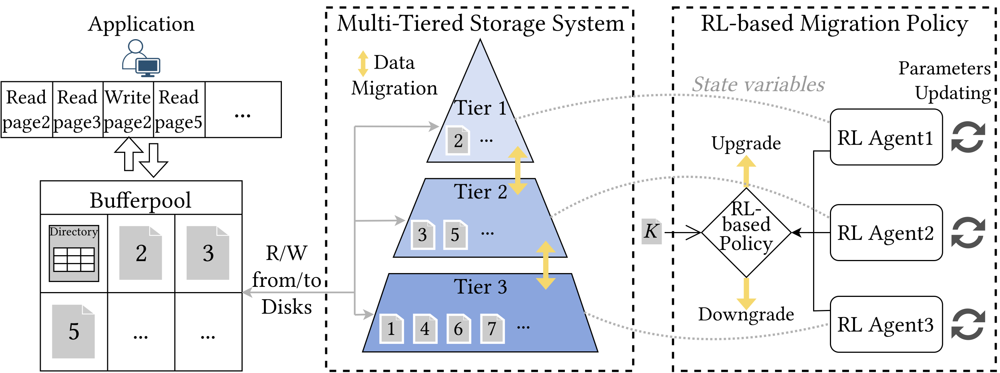
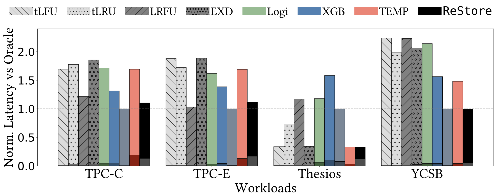

RL-based data migration for multi-tier storage systems.
With the development of storage technologies, a wide variety of storage devices with different performance characteristics and cost profiles have emerged. Consequently, modern data systems are increasingly adopting multi-tiered storage solutions, where faster (but typically smaller) devices are placed in higher tiers, while lower tiers comprise slower, higher-capacity devices. A primary challenge in such systems is fine-grained data placement, i.e., determining how data blocks should be dynamically stored and migrated across different storage tiers to optimize overall performance. Effective data migration policies should be lightweight and adaptive to workload variations while considering storage device characteristics, notably the read/write asymmetry and parallelism of modern SSDs.
In this paper, we introduce ReStore, a lightweight page-level reinforcement learning (RL) approach for data migration in multi-tiered storage systems, addressing both the performance and fine-grained access challenges common in database systems. ReStore leverages RL to capture workload patterns (access frequency and recency) and device-specific characteristics (read/write asymmetry and internal parallelism). Each storage tier uses a different device and is associated with an RL agent that dynamically updates its parameters using temporal difference learning, ensuring continuous adaptability to changing workloads and system states.
We experimentally show that ReStore achieves up to \(6\times\) lower runtime and up to \(48\times\) fewer migrations using industry-grade benchmarks, like TPC-C, TPC-E, and YCSB, real-life traces, like Google Thesios and MSR Cambridge, and a wide variety of synthetic workloads.

